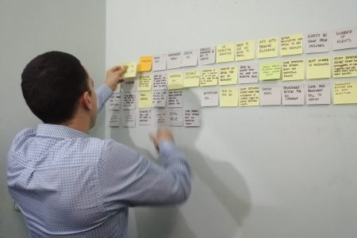
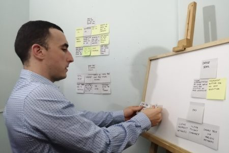

Analysis
✔ Affinity Diagram ✔ Customer Journey Map
Now it’s time to organize the unstructured data I gathered during the research phase (ideally with a team to build consensus) to clearly articulate the precise problem or set of problems I’m trying to solve.

